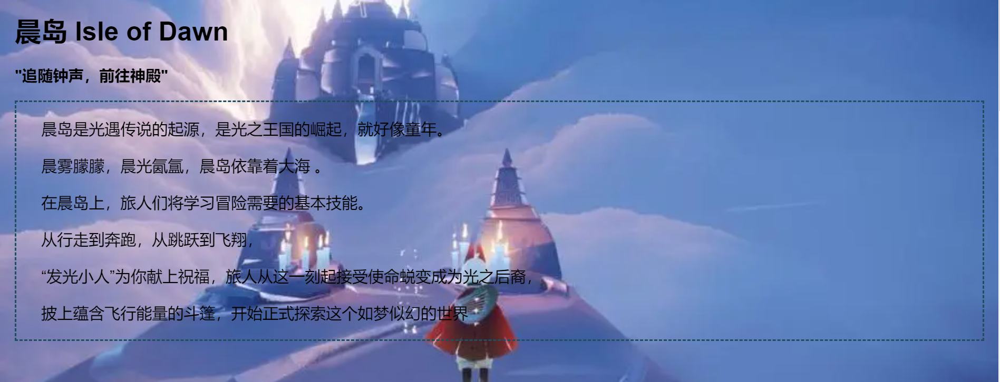

1.成果展示
1.引言页面
2.这是主页面
3.分页面
1.晨岛
2.云野

3.雨林
4.霞谷
5.墓土
6.禁阁
2.开发过程
1.css样式
body {
background: url(images/diyige.jpg) no-repeat center center;
background-size: cover;
/* 让背景图基于容器大小伸缩 */
background-attachment: fixed;
/* 当内容高度大于图片高度时，背景图像的位置相对于viewport固定 此条属性必须设置否则可能无效*/
background-color: #CCCCCC;
/* 设置背景颜色，背景图加载过程中会显示背景色 */
}
注意：
（1）我们将背景图像的所有父元素高度设置为100％，只有这样，图像才能覆盖整个屏幕
（2） 我们通过ID(intro)为该元素设置的背景图像的 URL. 这也是显示图片的常用方式之一(这种情况下, 我们就不能通过在页面图片上点击右键来另存为…之类的了)
（3）我们使用了cover来设置背景的尺寸, 它将覆盖屏幕所有可用的空间
（4） -webkit-, -moz- , -o-前缀是为了确保在所有浏览器都正常工作. 不过现代浏览器都支持了, 所以不用也没什么问题
2.vscode代码
3.遇到的问题
1.无法登录GitHub
GitHub是外网，登录不稳定，以及GitHubDesktop下载缓慢
搭梯子链接外网，进入GitHub更快，更方便
2.不会管理GitHub
在网上找视频教程学习如何部署网站
3.关于css样式使用不熟练
按照教程一步一步部署
4.未解决问题
!!!部分图片无法加载，至今未找到问题所在
4.总结
通过这次的作业，我了解到了web网站开发的过程，知道了关于HTML，css的许多知识。
这次简短的课程，我也只不过是学习了一些皮毛，关于更深层次的东西，还需继续学习和研究。 小有收获，也希望在今后的学习中学到更多的知识。